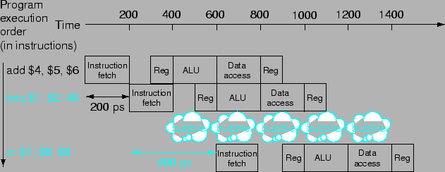

Hazard ประเภทที่สามเกิดจากการที่ต้องการการตัดสินใจจากคำสั่งก่อนหน้าในการทำงาน ซึ่งจะเกิดได้ในคำสั่ง branch จะสังเกตได้ว่าคำสั่งที่เรียงกันมาจะถูก Fetch ทันทีหลังคำสั่ง Branch ซึ่งในขณะนั้นโปรเซสเซอร์เองอยู่ในระหว่างการ Decode คำสั่ง Branch (และ Fetch คำสั่งต่อมา) ซึ่งยังไม่รู้ว่าเป็นคำสั่งที่กำลัง Decode เป็นคำสั่งอะไร ซึ่งเมื่อรู้ว่าเป็นคำสั่ง Branch จำเป็นต้องหยุดไพพ์ลายน์ก่อนเพื่อรอผลการตัดสินใจการควบคุม เพื่อจะได้ Fetch คำสั่งมาได้ถูก
สมมุติให้โปรเซสเซอร์มีฮาร์ดแวร์เพียงพอที่จะสามารถตัดสินใจ และคำนวณ Branch Target Address ได้ในสเตทที่ 2 การทำ Branch จะมีลักษณะดังรูป 6.7 ที่แสดงการ Stall จาก Branch ที่ต้องรอ 200 ps ก่อนการทำงานต่อเนื่องกันไป
|

|
ในกรณีที่ไม่สามารถเพิ่มฮาร์ดแวร์ให้สามารถตัดสินใจ และคำนวณ Branch Target Address ได้ในสเตทที่ 2 การ Stall จะเกิดเพิ่มมากขึ้นอีก ซึ่งอีกวิธีหนึ่งที่สามารถช่วยเพิ่มประสิทธิภาพได้คือการทำการคาดการณ์ Branch (Branch Prediction)
คอมพิวเตอร์สามารถคาดการณ์ว่า Branch จะเป็นแบบ Not Taken ซึ่งสามารถแสดงการทำงานได้ในรูป 6.8 ถ้ากรณีที่ Branch Taken ก็จะทำการ Stall ไพพ์ลายน์
ซึ่งการคาดการณ์ในลักษณะนี้สามารถเพิ่มความซับซ้อนได้มาก โดยหาวิธีที่จะคาดเดาการทำ Branch ให้ใกล้เคียงมากที่สุด ที่เรียกว่า Dynamic Branch Prediction ดังจะได้กล่าวต่อไปในบทหลัง